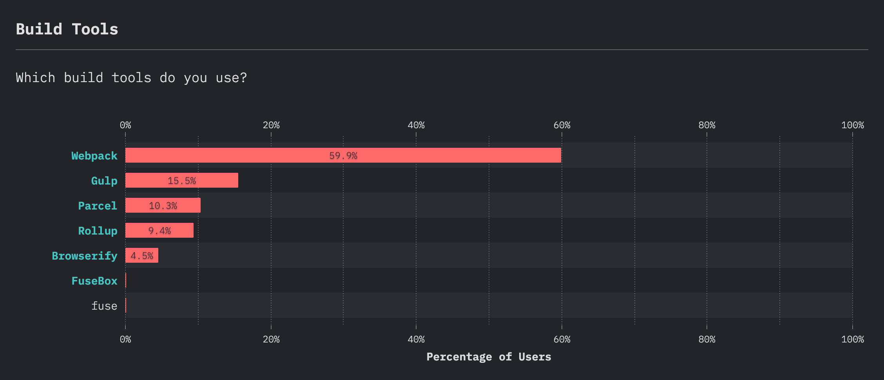

Webpack
w/ Marc Peternell
Erster Einblick
Module Bundler
Abhängigkeiten
Webpack ist ein sogenannter Module Bundler, das heißt, es hilft beim Bündeln von JavaScript-Modulen
und er berücksichtigt Abhängigkeiten. Webpack kennt man jedoch auch zum Transformieren
und Zusammenfassen anderer Dateien wie Stylesheets und Bilder.
Build Tools
die aktuellen google trends weltweit. stand heute
stateofjs.com

stateofjs macht jedes Jahr befragen zu sämtlichen Developer Themen. Unter anderem auch welche Build Tools 2019 am meisten verwendet werden.
Modul Bundling
Abhänigkeiten werden berücksichtigt
Modul Bundling ist ein komplexerer Vorgang als das Reine-Datei-Zusammenfassen.
Es werden auch Abhängigkeiten berücksichtigt.
Webpack behandelt dabei nicht nur JavaScript Module
auch CSS Dateien und Bilder.
Webpack Module
ES2015
require()
@import
sass/less
Bildverweise
Module sind bei Webpack weit gefasst. Es gehören dazu
ES2015 import-Anweisungen,
require()- Anweisungen,
css @import
sass/less
Bildverweise im Stylesheet oder in der HTML-Datei.
Webpack erledigt dabei nicht nur das Zusammenfassen der Dateien
unter Berücksichtigung der Abhängigkeiten, sondern hilft auch bei der Transformation, wenn zum
Beispiel, ES6-Code benutzt wird oder SASS, dann kann die Bearbeitung der Dateien ebenfalls über
Webpack durchgeführt werden.
Entry Point
Ausgehend von den entry points analysiert Webpack sämtliche Abhängigkeiten
dann werden alle Pakete zu statischen Bundeln zusammgefasst, die vom Browser geladen werden können.
Wichtige Begriffe
Entry Point
Output
Input
Plugins
Entry Point: Von dort beginnt Webpack, die Abhängigkeiten zu analysieren.
Output: Output ist der Speicherort, wo die Bundels erzeugt werden.
Loader: Webpack versteht von Haus aus nur JavaScript, und Loaders transformieren andere Dateitypen in Module.
Plugins: Es gibt viele Plugins für weitergehende Aktionen wie beispielsweise Kompilierung oder Definition von Codeteilen etc..
Webpack Installation
# Step 1
npm init -y
# Setp 2
npm install --save-dev webpack
# Step 3
./node_modules/.bin/webpack init
Was jetzt geschieht, ist,
dass zum einen ein Ordner **node_modules** mit allen Modul eingelegt wird,
und außerdem wird die Angabe zu Webpack in der Datei package.json festgehalten inklusive der benutzten Version.
Webpack wird lokal für das Projekt installiert.
Es ist aber auch möglich Webpack mit dem zusatz **-g** global zu installieren. Das ist aber im allgemeinen nicht empfehlenswert, da projekte oft mit unterschiedlichen versionen von Webpack arbeitet.
In der **package.json** Datei wurde ein neuer Eintrag generiert
package.json
"devDependencies" :
{
"webpack":"^4.42.1"
}
Webpack Help
# MacOS
./node_modules/.bin/webpack --help
# Windows
.\node_modules\.bin\webpack --help
Um zu testen ob Webpack installiert wurde und auch funktioniert folgenden Befehl in die Komandozeile eingeben.
First Steps
Step 1
./node_modules/.bin/webpack input.File -o output.File
Um Datien mit Webpack bundeln zu können wird folgender Befehl für die CLI benötigt.
Wenn -o output.File nicht angegeben wird, wird der default Ordner von Webpack ersellt
dist/bundle.js
webpack.config.js
// Path ist ein Modul von node.js und hilft bei der arbeit mit Dateien und Ordnern
const path = require('path');
module.exports = {
// Der Pfad zur Ausgangsdatei an der Webpack beginnt die Abhängigkeiten zu analysieren
entry: '',
// Welche Datei soll geschrieben werden
output: {
filename: ,
path: path.resolve(__dirname, 'output.Folder')
}
};
Sämtliche Webpack Optionen können über die CLI aufgerufen werden
aber es wäre echt mühsam jedesmal alle parameter schreiben zu müssen
aus diesem grund gibt es eine webpack.config.js
es muss nur mehr ./node_modules/.bin/webpack aufgerufen werden weil wir eine config datei haben
CLI
...
"scripts": {
"test": "echo \"Error: no test specified\" && exit 1",
"build": "webpack"
},
...npm run build
Um beim Aufruf von Webpack nicht jedesmal den gesamten Pfand angeben zu müssen kann Webpack auch im script Bereich der package.json Datei angegeben werden.
achtung: beim ersten muss trotzdem der pfad angegeben werden, damit npm den pfad findet
Tree Shaking
eliminiert Code der nicht genutzt wird
Wenn ein neuer Computer gekauft wird und dieser viele Features besitzt, die überhaupt nicht gebraucht werden, sind dieses teuer Bezahlt.
Ähnlich gilt dies für nicht Verwendeten Code
dieser ist unnötig und unvorteilhaft für die Performance
Das sogenannte Tree Shaking eliminiert Code der nicht genutzt wird
Um Tree Shaking zu verstehen, muss man sich veranschaunlichen, dass Webpack die Abhängigkeiten analysiert und intern einen Abhängigkeitsgraph bzw. Abhängigkeitsbaum erstellt
Und wenn man diesen Baum schüttelt, dann fallen tote Äste herunter, das heißt, das, was nicht benötigt wird, wird ausgeklammert.
Loaders 1/2
Loader sind Erweiterungen für Webpack.
Mit Bable z.B. kann ES6 Code in ES2015 Code umgewandelt werden.
Loader sind erweiterungen für Webpack ung bieten die unterschiedlichsten möglichkeiten
z.b. Bable -> zur umwandlung von es6 zu es2015
Packaging
Dialekte
templates
Loaders 2/2
const path = require('path');
module.exports = {
entry: './src/app.js',
output: {
filename: 'app.js',
path: path.resolve(__dirname, 'public')
},
//neu
module: {
//hier definieren wir unsere Regeln
rules: [
{
// bei Tests geben wir an welche Dateitypen bearbeitet werden sollen. In
diesem Beispiel alle .js Dateien (diese werden mit einer regex ausgewählt)
test: /\.fileName$/,
// welche Ordner sollen nicht berücksichtigt werden.
exclude: /(dirName)/,
// bei use werden die Loader angegeben
use: {
loader: '',
//zusätzlich können gewissen Optionen definiert werden.
options: {
presets: ['']
}
}
}
]
////////////
}
};
Entry Points
...
entry: {
main: '',
second: ''
},
output: {
filename: '[name].js',
path: path.resolve(__dirname, 'public')
}
...
es können merere entry points definidert werden
es muss mit platzhaltern gearbeitet werden
Cache
Eine gute Caching Strategie hilft für eine gute Performance
app.js?build=1
app.js?build=2
Wichtig für eine gute Performance ist die richtige Caching-Strategie
am schnellsten lädt Code, der gar nicht erst heruntergeladen werden muss
je nach Dateityp vorgegeben wird, wie lange dieser gecached werden darf
klassische mehtode mit einem parameter
webpack bietet das standartgemäß an
Hash & Chunkhash
[hash] -> der Hash ist für alle Dateien des Builds gleich.
[chunkhash] -> der Hash ist für jede Datei individuell
filename: '[name].[chunkhash].js'
CSS
Mit Webpack können auch CSS Dateien verarbeiter werden. Diese werden inline Eingebunden.
Webpack kümmert sich nicht nur um die Verarbeitung von JavaScript-Dateien, sondern kann ebenfalls CSS bearbeiten. CSS-Code können inline eingebunden werden, CSS-Dateien können gebündelt werden und natürlich auch LESS und SASS in CSS umwandeln.
Externe CSS
CSS inline einbinden ist für SPA ganz nett, für größe Projekte aber nicht sinnvoll.
CSS-Dateien inline einzubinden ist sinnvoll bei SPA, ansonsten ist es besser mit externen Stylesheets zu arbeiten, weil diese auch gecached werden können.
SASS
Um SASS zu verwenden müssen sass-loader und node-sass installiert werden.
Um SASS zu verwenden muss zuerst der Sass-Loader & node-sass installiert werden. Weiters wird das Plugin mini-css-extract-plugin benötigt um die Datei in eine externe CSS Datei umzuwandeln.
Images
Zur Verarbeitung von Bildern wird der File-Loader und der Url-Loader benötigt.
Zur Verarbeitung von bildern wird der File-Loader und der Url-Loader benötigt.
Standardmäßig bindet Webpack Bilder inline ein.
Es kann aber in der Config Datei auch bestimmt werden ab welcher größe Bilder inline eingebunden werden sollen.
Das inline Einbinden von Bildern ist gut für die Performance, weil man dadurch HTTP-Request spart
aber es ist nicht immer sinnvoll und es ist auch gerade nicht sinnvoll bei sehr großen Bildern.